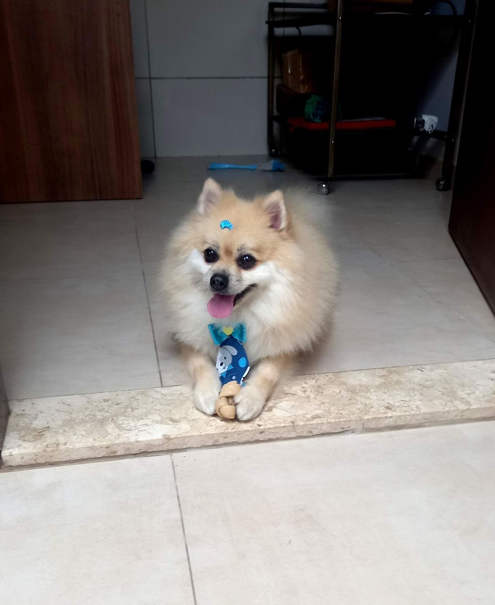
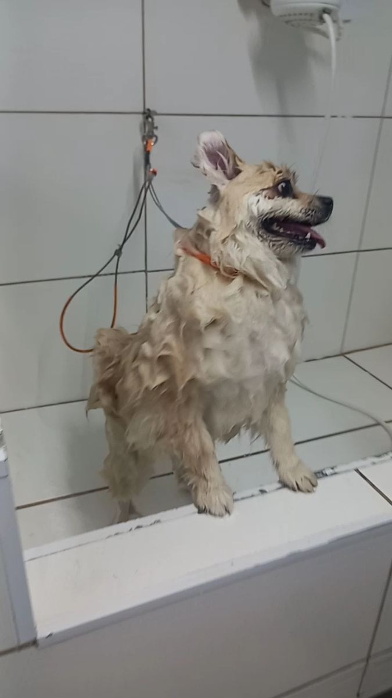
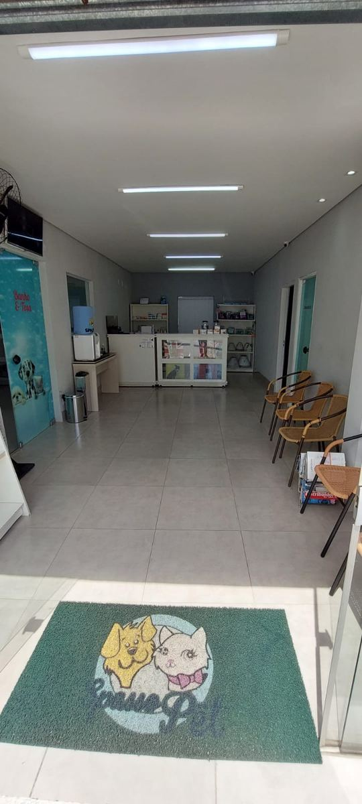
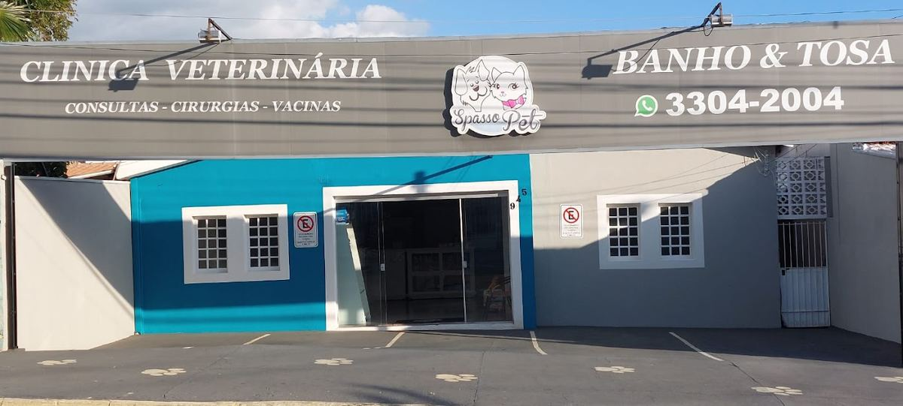

Jardim do Lago · há mais de 12 anos
Aqui seu pet se sente em casa, da consulta ao banho.
Clínica veterinária com consultas, vacinas, exames e cirurgias, e banho e tosa com quem entende de raça peluda. Tudo no mesmo endereço, com hora marcada pelo WhatsApp.
Terça a sexta 8h às 18h · sábado 8h às 16h


4,9 ★221 avaliações
Serviços
Saúde e beleza no mesmo lugar
"Clínica veterinária completa, com exames e também banho e tosa", como resumem os clientes.
Clínica veterinária
- Consultas com o Dr. Jaime
- Vacinas
- Exames
- Cirurgias
Banho e tosa
- Banho para cães e gatos
- Tosa de raças peludas
- Tosa higiênica
- Produtos de qualidade

Tosa com cuidado
Spitz, gato peludo e quem mais precisar
Pelo de Spitz Alemão e de gato peludo pede mão experiente, para não maltratar a pele. É o que os tutores mais elogiam: a tosadora tem experiência, e o veterinário está ali do lado se precisar.
Dica: agende pelo WhatsApp e diga a raça e o porte. Assim o horário já sai do tamanho certo para o seu pet.
4,9 · 221 avaliações no Google
Tutores tranquilos
Dr. Jaime é muito experiente. Tenho um Spitz Alemão, que requer muita experiência na tosa. Aqui, após 3 anos, estou tranquilo.Fabio · Google
Meu gato é muito peludo, tem necessidade de tosa. Achei na Spasso Pet um bom atendimento e toda a atenção para meu gatinho.Rosiane · Google
Ótimo atendimento, desde a recepção. Levei minha gatinha para tomar banho e ela ficou linda, super indico.Ana Cristina · Google

Onde fica
Av. Adão Focesi, 945
| Domingo e segunda | Fechado |
| Terça a sexta | 8h às 18h |
| Sábado | 8h às 16h |
Av. Adão Focesi, 945 · Jardim do Lago, Campinas (SP)
Telefone (19) 3304-2004 · @spasso.pet
Entrada e estacionamento acessíveis